기자:지뢰 매설 한곳이 6곳이다 주장 나왔는데 국방부 입장은 어떰?
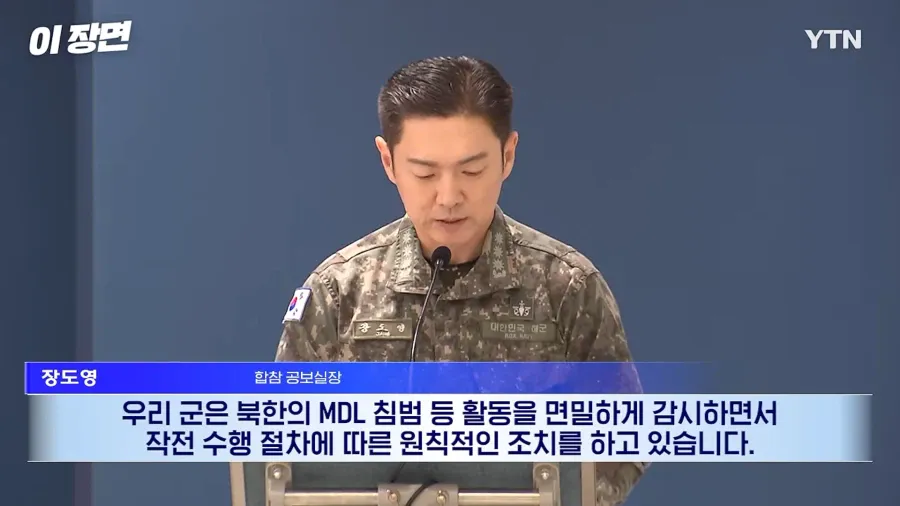
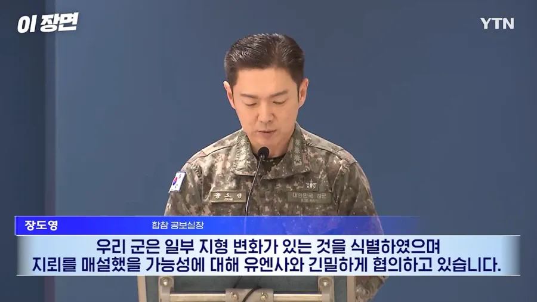
6곳인지 확인 시켜드릴순 없지만 아무튼 파악 중이고 유앤사랑 협의중이고 북한에도 엄중경고했음.
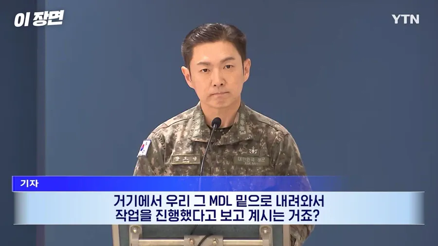
기자:그럼 북한에서 넘어와서 지뢰 매설 작업 한거로 보고 계신거죠?
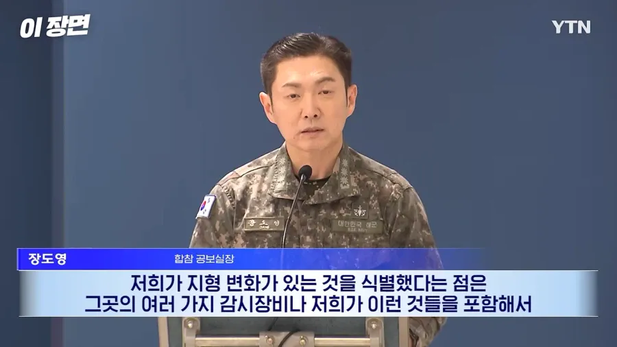
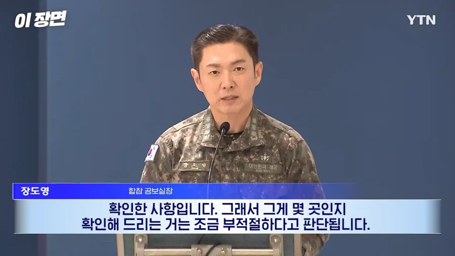
지형변화가 있던건 사실인데 근데 우리 감사장비나 지뢰가 몇곳에 매설 된건진 담변 못함 ㅅㄱ
(북한 이 한거냐라는 질문 대답 맞음)
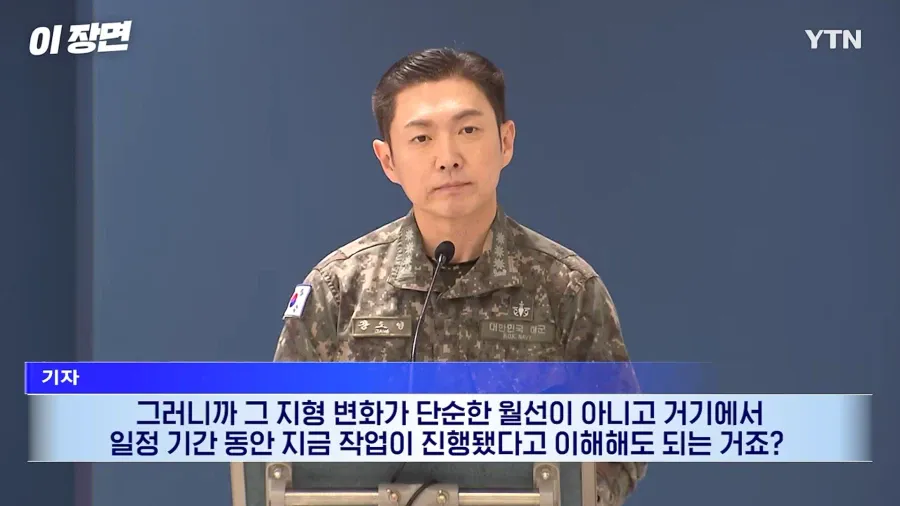
그러니까 북한이 한거로 이해하면 되냐고.
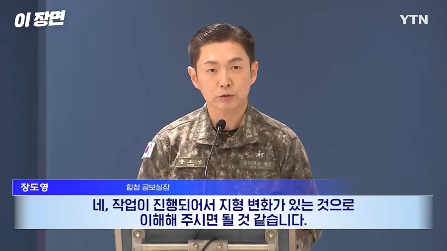
ㅇㅇ
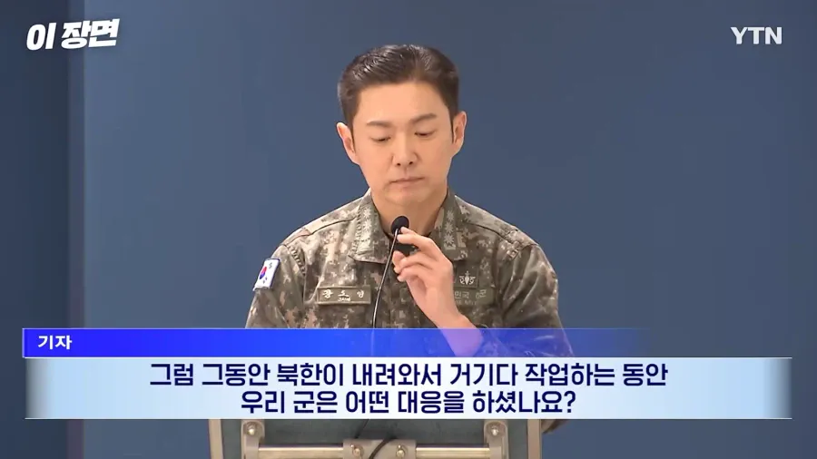
그럼 북한이 넘어와서 지뢰매설 하는 동안 우리 군은 어떻게 대응함?
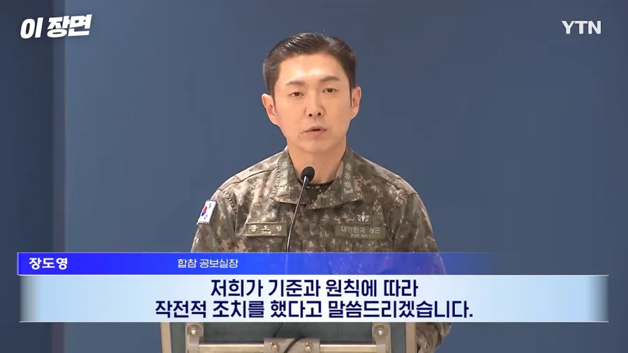
말씀 드릴순 없고 기준과 원칙에 따라 했음.
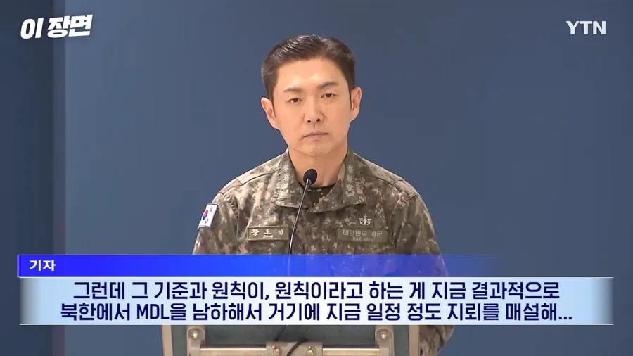
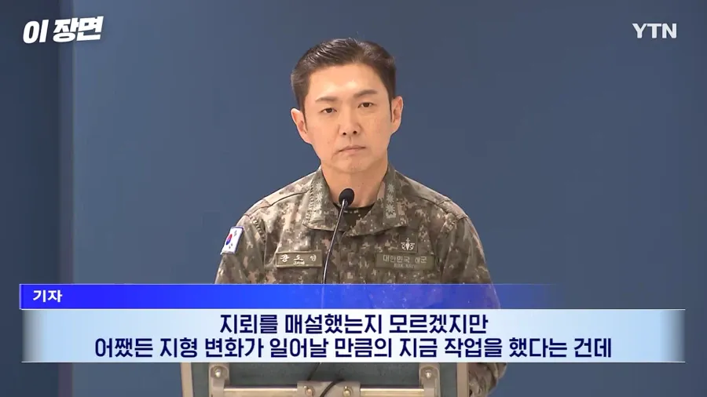
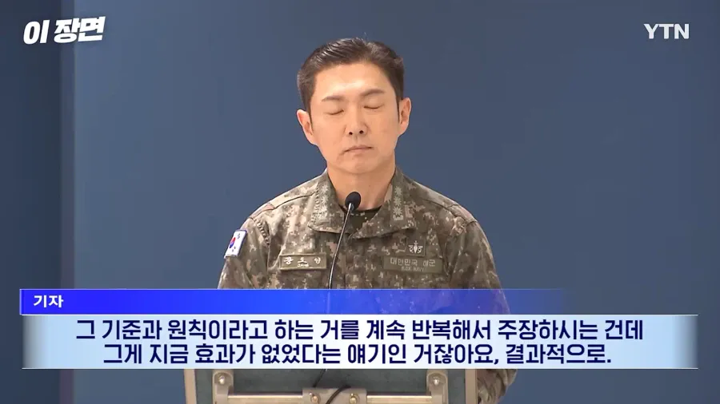
아니 그래서 그 기준과 원칙이 소용없잖아.
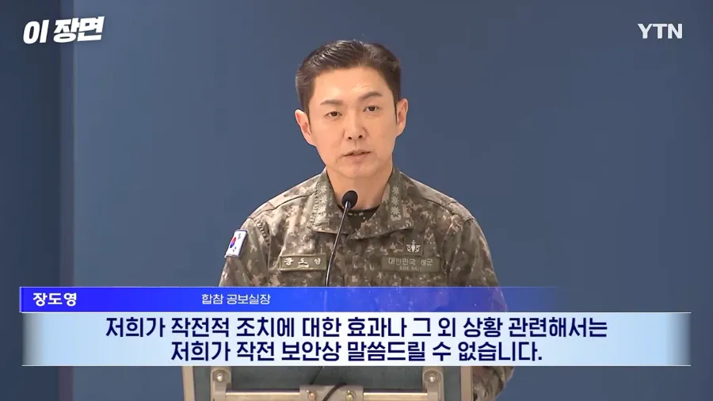
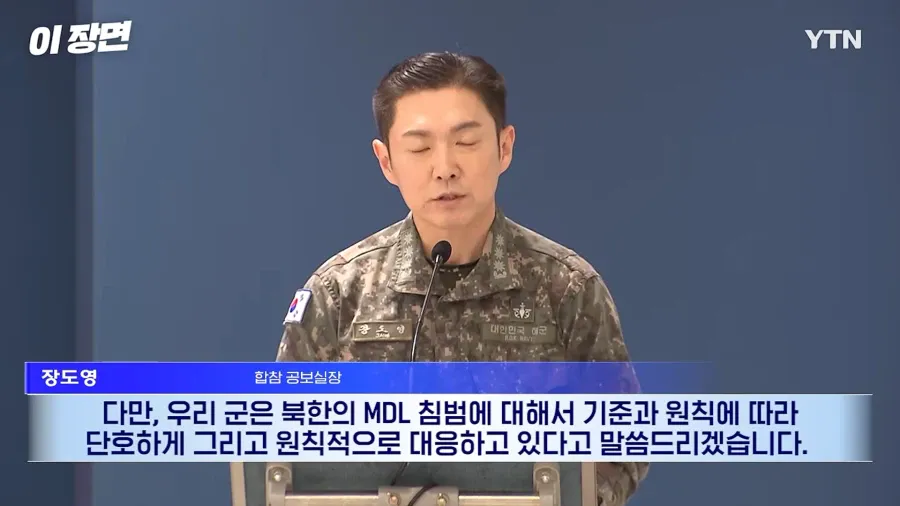
아무튼 보안상 말할수없음.
그리고 일주일뒤...
좆됏다